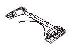
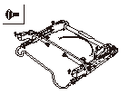
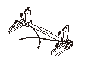
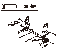
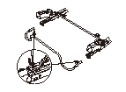
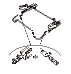
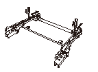
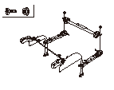

セカンド シート ベース フレームの分解、組立
手袋を着用して作業すること。
•
汚れや傷をつけないように作業すること。
•
ケーブルを折り曲げないこと。
図は右側シートを示し、左側シートも同様に行う。
セカンド シートを取外す。
ベース フレームから次の部品を取外す。
•
シート クッション フレーム
•
アンダ カバーA
リヤ フット ケーブル（A）からバンド（B）を外す。

リヤ フット（A）を上から抑え、フロント フット（B）を軽く起こしながら、フロント フット側のリンク取付けスクリュ（C）を外す。（両側）
スクリュを外すと、リンク アウタ スプリング（D）が縮み、リヤ フットが急に起き上がるため、確実に抑えながら行うこと。

リヤ フット（A）を手で支えながら、徐々に起こして立ち上げ、リンク アウタ スプリング（B）のフックをスライド アジャスタ（C）の穴から外す。（両側）

リヤ フット シャフト ボルト（A）を外し、アウタ リヤ フット/ケーブル（B）およびインナ リヤ フット/ケーブル（C）を取外す。
リンク取付けスクリュ（D）を外し、リヤ フットからアウタ リンク（E）、インナ リンク（F）およびリンク アウタ スプリング（G）を取外す。
スライド アジャスタを最前位置にする。

マイナス ドライバを使用し、左右のスプリング（A）の爪を解除しながらスライド レバー（B）を前方にずらし、レバーを引抜く。
•
マイナス ドライバにテープなどを巻付けて傷つきを防止する。
•
スプリングはスライド アジャスタ側に残る。

スライド アジャスタ（A）に残ったスプリング（B）を90°ひねって引抜き、スライド レバー（C）に取付ける。

スライド アジャスタ（A）の穴にドライバなどを差込み、スライド ロックを解除し、スライド アジャスタを後方いっぱいにずらす。

ボルト（A）、ナット（B）を外し、アウタ スライド アジャスタ（C）、インナ スライド アジャスタ（D）、フロント レッグ（E）およびコネクティング パイプ（F）を分離する。
組立は、分解の逆の手順で行う。
リンク取付けスクリュ、およびリヤ フット シャフト ボルトにネジ ロックを塗布する。



 図は右側シートを示し、左側シートも同様に行う。
図は右側シートを示し、左側シートも同様に行う。
図は右側シートを示し、左側シートも同様に行う。
図は右側シートを示し、左側シートも同様に行う。